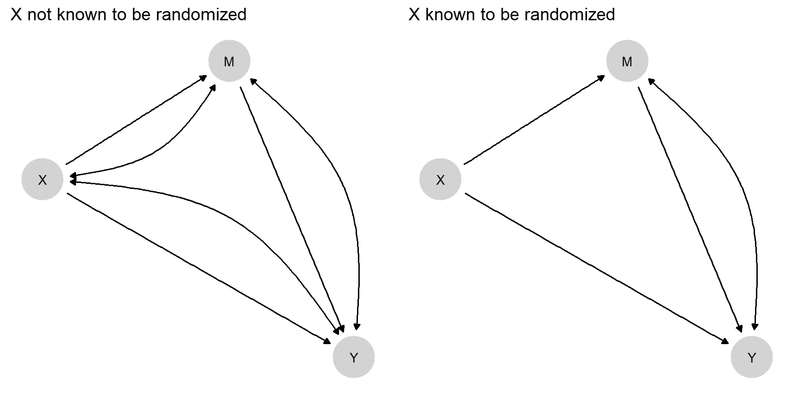
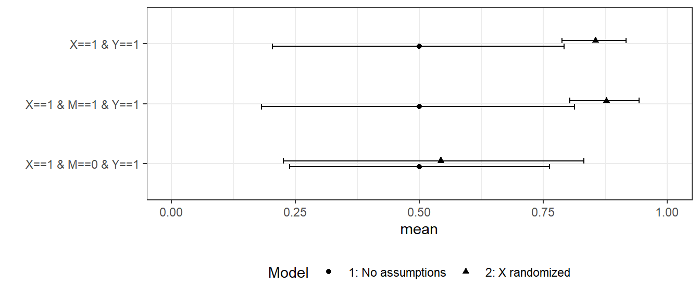
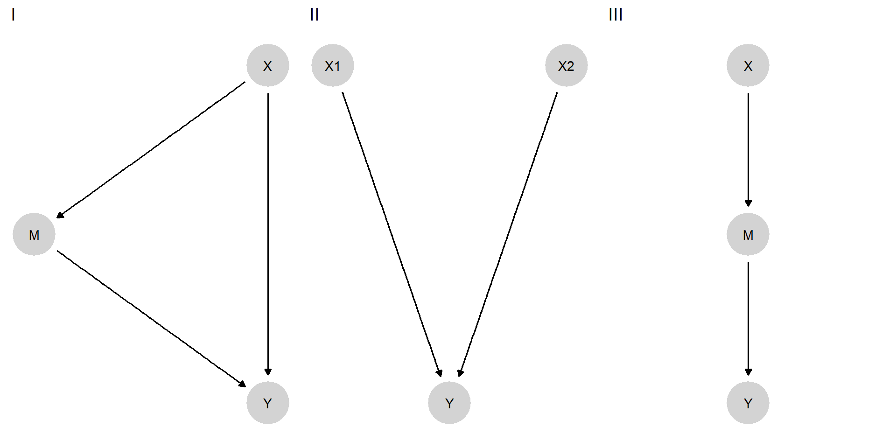
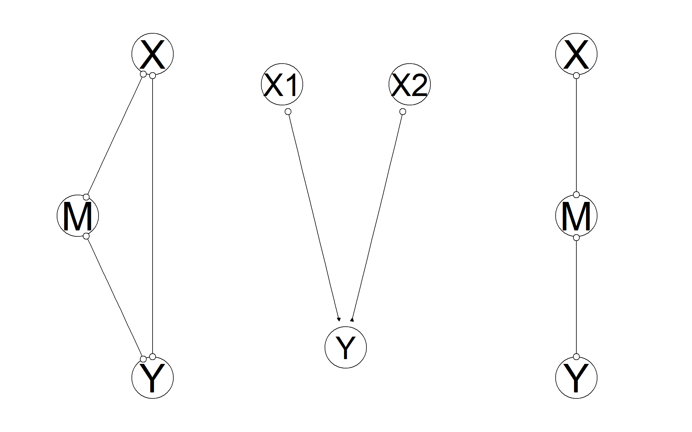

15 Justifying Models
Chapter summary
We outline strategies for justifying models on the basis of prior data and thus empirically grounding beliefs about the probative value of clues.
The approaches to inference that we have described always involve updating beliefs given data and a model. So to get going, you need to start with a model of some form.
We see two broad responses to this problem.
One is to emphasize the model-contingent nature of claims. Some causal models might reasonably reflect actual beliefs about the world—for example, one might be convinced that treatment was randomly assigned, that there is no interference, and that units are independently sampled. All of these beliefs may be unwise, of course. But if held, then a simple model such as that represented by an \(X \rightarrow Y\) DAG is more a representation of beliefs about a simple process in the world than a model of the world, in the sense of a simplified representation.1 Recognizing that we are generally dealing with models that we do not really believe results in a reposing of the question: The question becomes not whether the assumptions are correct but whether the model is useful for some purpose (Clarke and Primo 2012). The next chapter expands upon this idea.
A second approach is to seek to justify a model empirically. We describe such approaches to empirical model justification in this chapter. We take up the problem in two steps. First, we focus on process tracing and ask whether and when, given a causal structure, we can empirically derive the probative value of clues. Second, we briefly summarize an approach to discovering causal structures, the key input for both process tracing and mixed-method inference.
15.1 Justifying probative value
The problem of justifying assumptions is acute for case-level process-tracing inferences, for two reasons. First, the beliefs that come into play in generating probative value for our clues are beliefs over the distribution of individual-level effects, not just beliefs over average effects. We need beliefs, for instance, about the probability of seeing some clue, \(K\), in a given case if \(X=1\) causes \(Y=1\) in the case. This puts us up against the fundamental problem of causal inference (Holland 1986). Second, in single-case inference, we have limited opportunity to learn about our model from the case at hand; so the beliefs we go in with are critical. Indeed for case-level queries, inferences might be little more than conditional applications of a model.2
The question we pursue in this chapter is whether and under what conditions we can empirically justify those beliefs that yield probative value for our clues.3
15.1.1 Nothing from Nothing
We start with a discouraging result. Many of the models we have looked at—especially for process tracing—include a good deal of structure. Assumptions might include:
- conditional-independence assumptions
- assumptions of no confounding
- monotonicity assumptions or other restrictions such as no interactions
What happens if we make none of these assumptions? One way to think about this question is: Can we start with a DAG that makes none of these assumptions and then use observational data—that is, learn from those data—to render clues informative about causal effects?
Suppose that we would like to be able to learn from a candidate clue, a node \(M\) that is possibly a mediator or perhaps a moderator in the sense that it is realized after some explanatory variable \(X\) and before some outcome variable \(Y\). We work through this problem under favorable conditions, a world in which in fact (though unknown ex ante to the researcher):
- \(X\) causes \(Y\) through \(M\)
- \(X\) is a necessary condition for \(M\), and \(M\) is a sufficient condition for \(Y\)—and so \(Y\) is monotonic in \(X\) and
- there is no confounding
We also assume that we have access to large amounts of observational data on \(X\), \(M\), and \(Y\).
We work through inferences for two types of models in which \(X\) can have both indirect and direct effects on \(Y\) (Figure 15.1). We impose no restrictions on nodal types in either model. Even though there are only three nodes, Model 1 has 128 causal types (\(2\times 4 \times 16\)). In addition:
In Model 1 we allow confounding between all pairs of nodes. This results in 127 free parameters.
In Model 2 we assume that \(X\) is known to be (“as if”) randomized, but we still allow for confounding between \(M\) and \(Y\). There are now only 64 free parameters.
We generate data from the true model and then update Model 1 and Model 2. Then we query the models to see how case-level inferences depend on (M). The results are shown in Figure 15.2. The query of interest is whether \(X\) caused \(Y\) in an \(X=1, Y=1\) case. We can inspect the figure to determine whether \(M\) is now informative about this query under trained versions of Model 1 and Model 2.

We find that even with an auspicious monotonic data-generating process in which \(M\) is a total mediator, \(M\) gives no traction on causal inference under Model 1—our beliefs have wide variance and are essentially unresponsive to \(M\) (in addition, updating on this model can cause computational errors). In contrast, when \(X\) is known to be randomized, as in Model 2, we have tight posteriors, and \(M\) gives considerable leverage. If we observe \(M=0\), we would downgrade confidence that \(X\) caused \(Y\).
This example nicely illustrates the Cartwright (1989)’s idea of “no causes in, no causes out.” We also think it poses a challenge to any process-tracing exercise that aspires to model-independence: observational data alone are not sufficient to generate a justification for process-tracing inferences for three-node problems even when in reality causal structures are simple.
15.1.2 Justifying the Classic Process-Tracing Tests
Now, on a more encouraging note, we show the possibility of justification of each of the four classical “qualitative tests” described by Collier (2011) and drawing on Van Evera (1997), at least when treatment assignment is as-if randomized.
Recall that the four tests are “smoking gun” tests, “hoop” tests, “doubly-decisive” tests, and “straw-in-the-wind” tests.A hoop test is one which, if failed, bodes especially badly for a claim; a smoking gun test is one that bodes especially well for a hypothesis if passed; a doubly-decisive test is strongly conclusive no matter what is found; and a straw-in-the-wind test is suggestive, though not conclusive, either way. Of course, Bayesian inference involves continuous probabilities, not discrete test categories, but we speak to these categories for heuristic purposes.
The key point is that probative value for case-level inference can be derived from data in which randomization of a causal variable can be assumed. Deriving probative value from data contrasts with approaches in which researchers are meant to have more or less direct knowledge of the priors and likelihoods.
In Humphreys and Jacobs (2015), for instance, formalization involves specifying (a) a prior that a hypothesis is true and, independently of that (b) a set of beliefs about the probability of seeing a given data pattern if the hypothesis is true and if it is false. Updating then proceeds using Bayes’ rule. However, this simple approach suffers from two related weaknesses. First, there is no good reason to expect these probabilities to be independent. Our prior beliefs about the hypotheses constitute beliefs about how the world works, and beliefs about how the world works should have implications for the conditions under which clues are likely to be observed. Second, there is nothing in the setup to indicate how beliefs about the probative value of clues should be established or justified.
Both of these problems are resolvable in the context of inference from fully specified causal models. We illustrate first by using an idealized example to show that a case-level “doubly-decisive” test can be justified by population-level data from factorial experimental designs (see also our discussion in Chapter 5); we then generalize to all four tests.
Suppose that we have observed experimental data on just \(X\) and \(Y\) across a large set of cases, allowing us to infer that \(\Pr(Y=1|X=1) = \Pr(Y=1|X=0) = .5\). Here, we have an average treatment effect of 0. But suppose, further, that our query is whether \(X=1\) caused \(Y=1\) in a particular case with \(X=1, Y=1\). The marginal distributions we have observed so far are consistent with a world in which \(X\) never affects \(Y\). But less obviously, they are also consistent with a world in which \(X\) always affects \(Y\) (sometimes negatively, sometimes positively). And they are also consistent with many possibilities in between these extremes.
Now let’s say that we have lots of data on a third variable, \(K\), and find (a) that \(K=1\) arises with 50% probability and (b) that the marginal distributions of \(Y\) given \(X\) and \(K\) are as follows:
- \(\Pr(Y=1|X=0, K = 0) = 1\)
- \(\Pr(Y=1|X=1, K = 0) = .5\)
- \(\Pr(Y=1|X=0, K = 1) = 0\)
- \(\Pr(Y=1|X=1, K = 1) = .5\)
We thus see that, in cases in which \(K=1\), \(X=1\) is a necessary condition for \(Y=1\). So if \(K=1\), then \(X=1\) certainly caused \(Y=1\) (since, in that case, were \(X\) zero, then \(Y\) would certainly be 0). On the other hand, were \(K=0\), then \(X=0\) would be a sufficient condition for \(Y=1\), which means that in this case, \(X=1\) most certainly did not cause \(Y=1\). We have then that, if \(K=1\), then certainly \(X=1\) caused \(Y=1\), whereas if \(K=0\), then certainly \(X=1\) did not cause \(Y=1\).
This example demonstrates it is, in principle, possible to justify a doubly decisive test on the basis of experimental data—provided that the case about which we seek to make inferences can be considered exchangeable with (that is, we have no reason to think it works differently from) the cases in the experimental data.
Table 15.2 shows how this logic generalizes to different types of tests. For each test, we first show the inferences from the data available to us (first five rows); we then show the inferences on whether \(X=1\) causes \(Y=1\) in cases where \(X=1\) and \(Y=1\) as a function of \(K\).
| Doubly decisive | Hoop | Smoking gun | Straw in the wind | |
|---|---|---|---|---|
| \(\Pr(K = 1)\) | \(\frac{1}{2}\) | \(\frac{9}{10}\) | \(\frac{1}{10}\) | \(\frac{1}{2}\) |
| \(\Pr(Y=1 \vert X=0, K = 0)\) | 1 | 1 | \(\frac13\) | \(\frac{1}{2}\) |
| \(\Pr(Y=1 \vert X=1, K = 0)\) | \(\frac{1}{2}\) | \(\frac{1}{2}\) | \(\frac{2}{3}\) | \(\frac{3}{4}\) |
| \(\Pr(Y=1 \vert X=0, K = 1)\) | 0 | \(\frac{1}{3}\) | 0 | \(\frac{1}{4}\) |
| \(\Pr(Y=1 \vert X=1, K = 1)\) | \(\frac{1}{2}\) | \(\frac{2}{3}\) | \(\frac{1}{2}\) | \(\frac{3}{4}\) |
| \(\Pr(X \text{ causes }Y \vert K=0)\) | 0 | 0 | \(\left[\frac12, 1\right]\) | \(\left[\frac13,\frac23\right]\) |
| \(\Pr(X \text{ causes }Y \vert K=1)\) | 1 | \(\left[\frac12, 1\right]\) | 1 | \(\left[\frac23,1\right]\) |
Note that some entries in Table 15.2 appear as ranges. This reflects the fact that, unless we are at edge cases, the estimand here is not identified even with infinite experimental data. In practice, we expect never to be at these edges. However, despite not being identified, bounds can be placed on causal quantities. For instance, for the hoop test, when \(K=1\), the bounds are \([.5,1]\). The reason that the probability of causation here cannot be less than 0.5 is that:
- We can see from the distribution of \(Y\) given \(X\) when \(K=1\) that \(X\) has a positive effect on \(Y\) at least one third of the time (the average effect is one third, and so there is a positive effect for at least one third of units; indeed, it is possible that there is a positive effect for 2/3 of units and a negative effect for the remaining 1/3).
- We can see that in two thirds of cases \(Y=1\) when \(X=1, K=1\)
- So at least half of these cases in which \(Y=1\) when \(X=1, K=1\) are cases for which \(Y=1\) because \(X=1\).
In these examples, the fact that queries are not point-identified with infinite data does not detract from the fact that \(K\) is informative in the ways associated with the different types of tests.
So much for infinite data. Is it possible to justify classic tests with inferences on finite data starting with flat priors? Using the procedures given in Chapter 9, the results in Table 15.3 show that it is. For these results, we imagine four different data generating \(X \rightarrow Y \leftarrow K\) models. The models vary in the amount of weight they accord to three different nodal types for \(Y\)—as well as in \(\lambda^K\). We then simulate 1,000 observations from each model and update an agnostic \(X \rightarrow Y \leftarrow K\) model.
In particular, for the doubly-decisive test, we generate the data from a model in which all units have nodal type \(\theta^Y = \theta^Y_{0001}\), and so the presence of \(K\) is necessary and sufficient to render \(X\) causal for \(Y\). For hoop tests, we generate data from a model in which there are also \(\theta^Y_{0101}\) nodal types: that is, cases in which \(K\) matters but \(X\) does not. Given these cases, observation of \(K=0\) guarantees that \(X\) does not matter, but observation of \(K=1\) does not guarantee that \(X\) does matter. To generate smoking gun tests, our data-generating model has a distribution over \(\theta^Y_{0001}\) and \(\theta^Y_{0011}\) types—in which \(X\) always matters when \(K=1\) but might not matter when \(X=0\). For straw-in-the-wind tests, we imagine a distribution over all three types.
In Table 15.3, we show the inferences we would now draw from observing \(K=1\) versus \(K=0\) in a single case, based on updating a model that has no restrictions and flat priors over all nodal types. The query is whether \(X\) has a positive effect on \(Y\) in a given case. Each column-labeled with the classic test names- represents our beliefs about \(K\)’s probative value as derived from data generated by the four models we described above. These indeed conform to expectations. In the “hoop test” column, we see that (having updated based on data from one of the four data-generating models), we have formed beliefs such that observing \(K=1\) in a case slightly boosts our confidence that \(X\) has a positive effect on \(Y\), while observing \(K=0\) dramatically undermines our confidence in such an effect. In the smoking gun column, we see that (having updated based on data from another one of the four data-generating models) we have formed beliefs such that observing \(K=1\) in a case greatly boosts our confidence that \(X\) has a positive effect on \(Y\), while observing \(K=0\) slightly undermines our confidence in such an effect.
We underline that we have here derived the probative value of the clue from observed data and a model that was entirely agnostic about the clue’s probative value (but which did assume some priors on causal types). In particular, the model that we start with has no restrictions on \(Y\)’s nodal types, has flat beliefs over the distribution of \(K\), and imposes no assumption that \(K\) is informative for how \(Y\) responds to \(X\). It does, however, assume that \(X\) and \(K\) are unconfounded root nodes, as might be the case if these were experimentally manipulated.
| Given | Straw in the wind | Hoop | Smoking gun | Doubly Decisive |
|---|---|---|---|---|
| - | 0.493 | 0.455 | 0.555 | 0.484 |
| K=0 | 0.286 | 0.041 | 0.518 | 0.009 |
| K=1 | 0.697 | 0.496 | 0.895 | 0.976 |
For both of these examples, we have focused on moderators as clues. For results on mediators as clues, see Dawid, Humphreys, and Musio (2019), which establishes that mediators in chain models can produce hoop tests but are generally unable to generate smoking gun tests.
This approach to thinking about process tracing tests is quite different from that described in existing (including Bayesian) treatments such as Collier (2011), Bennett (2015), Fairfield and Charman (2017), or Humphreys and Jacobs (2015). Rather than having a belief about the probative value of a clue, and a prior over a hypothesis, inferences are drawn directly from a causal model that embeds a clue in a network of possible causal effects. Critically, with this approach, the inferences made from observing clues can be justified by referencing a more fundamental, relatively agnostic model, that has been updated in light of data. The updated model yields a prior over the proposition, beliefs about probative values, and guidance for what conclusions to draw given knowledge of \(K\).
15.2 Empirical Discovery of Causal Structure
In the preceding discussion of learning about probative value for process tracing, we have taken causal structure—the DAG itself—as given. Moreover, even when we are engaged in mixed-data inference on multiple cases—where we can start with only the DAG—we still need to start with some causal structure. Where does knowledge of causal structure come from?
One approach is to treat causal structure as just one more level in our multi-tiered hierarchy of models. We can entertain multiple models and specify priors over the causal structure. One could, for instance, have beliefs over two causal models that are mutually incompatible because arrows between two nodes point in opposite directions. In this case, uncertainty reflects uncertainty over models but learning involves not just updating model parameters but also updating over model structure.
This is a perfectly coherent approach but given the complexity of inferences conditional on a causal structure, we do not pursue this strategy further here. Instead, we briefly describe approaches to “causal discovery”—strategies to derive causal structures from data.
The empirical discovery of causal structure is a very large field of inquiry, and we cannot do it justice here. For a review, see Glymour, Zhang, and Spirtes (2019).
We seek, rather, to illustrate the possibility of causal discovery.
To do so,We demonstrate three situations in which there is a true—but unknown model—relating \(X,M,\) and \(Y\) to each other. Critically, we assume that there are no unobserved confounding relations (this is a requirement for the “PC” algorithm but not for the “Fast Causal Inference” algorithm). In each situation, we show the true relationship and the “skeleton” of the model as discovered by a prominent technique that uses a “constraint-based algorithm”—examining whether observed data correlations are consistent with one or another set of conditional-independence relations.
In Figure 15.3, we represent the true models from which simulated data are generated. The objective is then to see how much of this true causal structure the discovery algorithm can recover from the data. In the first true model, \(X\) affects \(Y\) directly and indirectly through \(M\). In the second model, \(Y\) has two causes that do not influence each other. Finally, in the third model, \(X\) causes \(Y\) through \(M\) but not directly. When we simulate data from these models, we assume monotonicity but otherwise a flat distribution over nodal types. As noted, we We also assume no confounding: There is nothing not represented on the graph that affects more than one node.

In Figure 15.4, we show the structures that we recover. In all situations, we correctly recover the skeleton: which nodes are connected to which nodes. Note that, for any link where we have an “o” on both ends of the link, we do not know in which direction causal effects flow.

In the first situation, the skeleton is unrestricted: We have correctly not excluded links between any two nodes, but we have not learned about the directions of effects. In the second situation, however, we have fully recovered the causal structure. Thus, the algorithm has figured out that \(X_1\) and \(X_2\) are not children of \(Y\). The algorithm sees, in essence, data patterns that are distinctively associated with colliders: \(X_1\) and \(X_2\) correlated conditional on \(Y\) but not otherwise. In the last setup, we have not figured out the direction of the causal arrows, but the inference is still rather impressive. Although \(X\), \(M\), and \(Y\) are all correlated with each other, the algorithm has figured out that there should be no direct link between \(X\) and \(Y\)—by observing that \(X\) and \(M\) are not correlated with each other conditional on \(M\).
Note also that, in all three situations, if we have access to all relevant variables, the true graph can be recovered with additional knowledge of the temporal ordering of the variables.
The assumption that we have captured all nodes that might generate confounding is critical to these results. Yet these examples provide grounds for hope that causal models can be discovered and not simply assumed. If all relevant nodes are known and measured—a tall order for sure—causal structures can be identified from data.
We have shown that the models used for both process tracing and mixed-methods inference can be constructed from weaker models. This provides some defense against concerns that these approaches require assuming models that cannot be justified. In both cases, however, we also see that justification is not easy, sometimes not possible, and itself requires assumptions, albeit weaker ones.
Even in this simple case there are ways in which the representation is a model, not least the coding of events as a variable involves a form of modeling.↩︎
Though it is certainly possible to learn from a single case that the model itself is wrong—for example, if events are observed that are assigned 0 probability under a model.↩︎
The question was already addressed in Cahpters Chapter 9 and Chapter 10; here, we gather together some particularly sharp positive and negative results.↩︎